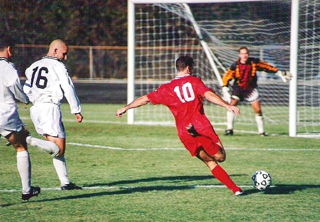
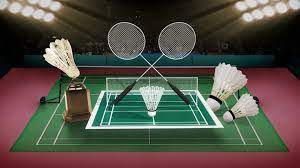

Welcome To Our Tamil Nadu Games Court
Traditional Games of Tamil Nadu
The name "traditional games" appeared as a derivative of the concept of "traditional lifestyles", and is an integrant of the concepts of "traditional culture" and "traditional holidays". Traditional games are held as part of the rituals and holidays of the traditional national calendar or traditional holidays, which are confined to the lunar and solar cycle and agricultural events throughout the year. Therefore, they fall under the same time frame for the majority of peoples dwelling in similar landscape and climatic zones. For the same reason, any attempts to move the dates of the traditional games are meaningless, because you cannot possibly have Shrovetide in December or July, Sabantuy in November or April, or Nowruz in September or January.
1. Kabadi
Kabaddi is a contact team sport. Played between two teams of seven players, the objective of the game is for a single player on offence, referred to as a "raider", to run into the opposing team's half of a court, tag out as many of their defenders as possible, and return to their own half of the court, all without being tackled by the defenders, and in a single breath. Points are scored for each player tagged by the raider, while the opposing team earns a point for stopping the raider. Players are taken out of the game if they are tagged or tackled, but are brought back in for each point scored by their team from a tag or tackle.
2. Silambattam
Development of this art at the time of sieges and king About 5000 years age, Sieges age shier, a great devotee of lord Muruga, the Tamil god, lived in the hills of Pothigai in Thirunelveli District, which is situated in Tamilnadu in south India. It is said that it was Agasthiar who invented this art of Silambam. It is an Ancient Martial art of Tamil Nadu. The origin and historical development of Silambam fencing may have begun with the early Dravidians from ancient Tamil Nadu. Tamil Nadu (Southern Part of India) is a land of ancient glory. It has seen the rise and fall of Great Kingdoms - The Cheri, Chola, Pandya, Pallava and many others. Each of them has left behind its own valuable culture and art forms.
3. Jallikattu
Jallikattu is a popular bull taming sport practiced particularly during Pongal festival. Jallikattu was a popular sport since the Sangam period Tamil classical period.Jallikattu (or sallikkattu), also known as eru thazhuvuthal and manju virattu, is a traditional spectacle in which a bull, such as the Pulikulam or Kangayam breeds, is released into a crowd of people, and multiple human participants attempt to grab the large hump on the bull's back with both arms and hang on to it while the bull attempts to escape. Participants hold the hump for as long as possible, attempting to bring the bull to a stop. In some cases, participants must ride long enough to remove flags on the bull's horns].
4. Rekla
Both bull and rider are conditioned for years, before they are ready for a rekla (bullock-cart) race. I've been rearing bullocks for the race for over twenty years now. I had a different name while in government service. After I retired though, I have taken on a different name. When my bulls win they race, they say, "Nagarampatti Vaiththiyar's bulls have won.” The area around Theni, where hills abound, is called Varshanadu. There are frequent rains. The cattle roams free on the hills, drinking that water, breathing in that air. They are guided by herders and protected from wolves. They are not tame. You will be gored if you go near. We call this breed the naattu inam (local breed). We take calves from this breed for the rekla race, and for our ploughs and transport.
5. Kilithattu
A game that requires quick reflexes, tactical thinking and tremendous team effort. This sport is a part of our Tamil heritage and preserves our Tamil identity. The ‘kili’ or last player must stand on the centre of the first lane when the game starts. The ‘kili’ player can move anywhere around the court or through the middle of the court but not horizontally. The team that is guarding the base and capturing it is chosen by a coin toss. The game is started by a whistle sound by the overseeing referee. When the game starts, each of the other members can only move sideways/horizontally. This accounts for the rest of the 5 members of the team for a total of 6 including ‘kili’.
6. Seval Sandai
Seval Sandai or Seval Porr (cockfighting) is a popular rural sport in Tamil Nadu. Three or four-inch blades are attached to the cocks' feet and the winner is decided after three or four rounds of no holds barred fighting. The sport involves major gambling in recent times. Cockfighting in Tamil Nadu is mentioned in ancient literature like Manu Needhi Sastiram, Kattu Seval Sastiram and other Sangam literature. It is referred to as the favorite pastime for the warriors of Tamil country and is acknowledged as one amongst the 64 great arts. It involves basically fighting skills for your chicken. Now it is widely played in the places of North America and Asia.
7. Uriyadi
Uriyadi involves smashing a small earthen pot with a long stick usually with a cloth wrapped around the eyes to prevent the participants from seeing the pot. Other minor sports include Ilavatta kal where lift huge spherical rocks, Gilli-danda played with two pieces of sticks, Nondi played by folding one leg and hopping squares. Some of the indoor games include Pallanguzhi involving beads, Bambaram involving spinning of top, Dhayakattai which is a modified dice game, Aadu puli attam, Nungu vandi and Seechangal.
8. KhoKho
Kho kho is a tag sport played by teams of twelve players who try to avoid being touched by members of the opposing team, only 9 players of the team enter the field. It is one of the two most popular traditional tag games played in schools, the other being kabbadi. Originating in Maharashtra, Kho-Kho in ancient times was played on 'raths' or chariots and was known as Rathera. The present appearance of the game was an adoption from the time of World War I in 1914. But at that time, there were neither any dimensions of the playground nor the poles which demarcate the central line.
9. Malyudham/Gusthi
Malyutham is a traditional Indian art of full contact Grappling that originated in Tamil Nadu. It was widely practiced in Tamil Nadu since ancient times as a sport. Malyutham is one of the 64 Arts mentioned in Ancient Literature. Malyutham is one of the Traditional Sports practiced in Tamil Nadu. There is another Art named Malla - Yuddha coming from North India. Although the names are similar, Malla-Yuddha and Malyutham are two different and very distinct Arts. They are different in the nature of the techniques studied and on their external aspects as well. Gusthi is also known as Kai Kuthu Sandai. Gusthi is a form of Traditional Boxing, which is slightly deviated from Wrestling. Gusthi of Tamil Nadu is a derivative of Malyutham of Tamil Nadu. There is another art coming from North India named Kushti. Although the names are almost same, Gusthi and Kushti are two different and two distinct arts. Gusthi is an art of Boxing, while Kusthi is an art of Wrestling. They are different in the nature of the techniques studied and on their external aspects as well.
10. Sadhurangam
Chess is believed to have originated in India, c. 280 – 550 CE, where its early form in Tamil Nadu was known as Sathurangam literally four divisions [of the military] – infantry, cavalry, elephants, and chariotry, represented by the pieces that would evolve into the modern pawn, knight, bishop, and rook, respectively. Modern day chess is a widely popular game in the state and Tamil Nadu State Chess Association is the apex body for the game of chess in Tamil Nadu. The state has produced many grandmasters including Viswanathan Anand, one of the greatest and most versatile players of the modern era having won the World Chess Championship five times from 2002 to 2013. Other notable players include S. Vijayalakshmi, P. V. Nandhidhaa and Krishnan Sasikiran.
Modern Games of Tamil Nadu
Modern sports developed from a long historical tradition. It is a ubiquitous and unique form of non-utilitarian physical contests and took shape over a period of approximately 150 years, from the early eighteenth to the late nineteenth centuries. Speaking historically, the modern sports were born in England and spread from their birthplace to the United States, to Western Europe, and to the world beyond. More particularly, the industrial revolution that took place between 1780 to 1920 in England & America is considered as one of the major factors that influenced the development of modern sports.
1. Cricket
Cricket is the most popular sport. It is played by many people in open spaces throughout the state.[17] Tamil Nadu Cricket Association is the governing body of cricket activities in the Tamil Nadu state of India and the Tamil Nadu cricket team, which has won the Ranji Trophy twice and have finished Runners-up 9 times. Chennai Super Kings, a franchise based out of Chennai is the most successful team in the Indian Premier League. Notable international cricketers from Tamil Nadu include Srinivas Venkataraghavan, Kris Srikkanth, Laxman Sivaramakrishnan, Robin Singh, Murali Vijay, Ravichandran Ashwin, Dinesh Karthik, Sadagoppan Ramesh, Vijay Shankar, Washington Sundar, Murali Karthik, Subramaniam Badrinath and Lakshmipathy Balaji. Cricket administrators from the state include current International Cricket Council president N. Srinivasan, former BCCI presidents A. C. Muthiah and his father M. A. Chidambaram.

2. Hockey
Hockey is one of the popular sports played in schools and colleges. Mayor Radhakrishnan Stadium is a field hockey stadium at Chennai named after M. Radhakrishna Pillai and was the venue to the 1996 Men's Champions Trophy and tournament tournaments. It is also the venue for all division matches of the Chennai Hockey Association and the home ground of the World Series Hockey team Chennai Cheetahs. Sports Development Authority of Tamil Nadu is planning to set up a hockey academy Notable international players include Vasudevan Baskaran, Krishnamurthy Perumal, M. J. Gopalan, Dhanraj Pillay, Adam Sinclair and Mohammed Riaz.
3. Tennis
Chennai Open was an ATP World Tour 250 series tournament previously held annually in January at SDAT Tennis Stadium in Chennai. It was the only ATP tournament held in the country until 2017, after which the tournament moved to Pune. Notable players are Ramesh Krishnan, Ramanathan Krishnan, Vijay Amritraj, Mahesh Bhupathi, Ramkumar Ramanathan, Prajnesh Gunneswaran, and Nirupama Vaidyanathan.


4. Motor Racing
Coimbatore is often referred to as the "Motor sports Capital of India" and the "Backyard of Indian Motorsports". S.Karivardhan, spearheaded motor racing, making Coimbatore the country's motor racing hub when he designed and built entry level race cars. Before Buddh International Circuit was constructed, the country's only two permanent race ways were the Kari Motor Speedway, Coimbatore and Madras Motor Racing Track, Chennai. MRF built is first Formula 3 car in 1997. MRF in collaboration with Maruti established the Formula Maruti racing, a single-seater, open wheel class motorsport racing event for race cars made in India. MRF Challenge is a Formula 2000 open-wheel motorsport formula based series organized by Madras Motor Sports Club in association with MRF. Narain Karthikeyan and Karun Chandhok, the only drivers from to represent India in Formula 1 hail from the state.
5. Others
Other popular games include athletics, soccer, basketball, volleyball and badminton. Jawaharlal Nehru Stadium, Chennai and Nehru Stadium, Coimbatore are popular multipurpose football and athletics stadiums in the state. Notable volleyball players include A. Palaniswamy, G. E. Sridharan and Tamil Nadu men's team won the Gold in National level competition held in 2011. Joshna Chinappa and Dipika Pallikal are the notable squash players who won gold at the Commonwealth games. Kutraleeswaran is a notable swimmer, who was the first Indian to cross six channels in a single calendar year. Archery, boxing, carrom, shooting, weightlifting, martial arts, snooker, golf, bowling and squash also feature among sports played. Srither won gold at Asian Archery Championship held at Indonesia in November 2009. A. Maria Irudayam and Ilavzhagi won world carrom championships. Santhi Soundarajan is the first Tamil woman to win a medal at Asian Games. Sathish Sivalingam is a commonwealth gold medalist in weightlifting. Mariyappan Thangavelu has won the gold medal in the finals of 2016 Summer Paralympic games held in Rio de Janeiro.
1. Athletics
2. Soccer/Football
3. Basketball

4. Volleyball
5. Batminton
6. Table Tennis